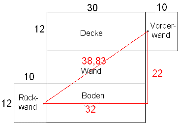

Lösung Puzzle 4: Der findige Elektriker
Der Elektriker benötigt 38m 83cm Draht.

Klappt man die Seitenwände und die Decke gemäss obenstehender Figur in die Bodenebene um, so erkennt man mit Pythagoras: Die minimale Länge beträgt \(\sf\sqrt{22^2+32^2}\) ≈ 38.83.
Diese Lösung stammt von Friedel aus Deutschland. Besten Dank!
©1997 - 2026 www.mathematik.ch |🔍